GPBR 112 :: Lecture 21 :: ONION (Allium cepa)

Onion is one of the most important commercial vegetable crops in India. Maharastra, Gujarat, Uttra Pradesh, Orissa and Andhra Pradesh are the major onion growing states. The total annual area is estimated to be about 3 lakhs hectare and production is about 35.37 lakh tonnes. It is grown mainly in rabi season. Three crops viz., Kharif, late Kharif and rabi are taken in Nasik division of Maharashtra whereas Gujarat, Andhra Pradesh, Rajasthan, Punjab, Harayana, Madhya Pradesh, Karnataka and Tamil Nadu take up two crops that is Kharif and rabi. Kharif onion is a recent introduction in Northern, Eastern and Central India.
Botany
Onion is the biennial crop and takes two full seasons to produce seeds. In the first year bulbs are formed and in the second year stalks develop and seed are produced. It is a long-day plant. The day length influences bulb onion, but has little effect on induction of seeding. It appears to be day-neutral for seed production. It requires cool conditions during early development of the bulb crop and again prior to and during early growth of seed stalk. Varieties bolt readily at 10 to 15 degree C. In the early stages of growth, a good supply of moisture is required and temperatures should be fairly cool. During bulbing, harvesting and curing of seed, fairly high temperatures and low humidity is desirable. Seed production is widely adapted to temperate and sub-tropical regions.
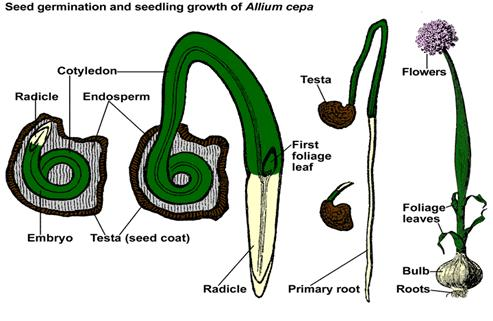
Stages of seed production : BS – FS - CS
Varieties
A. |
RED |
|
1. |
Punjab Selection |
PAU, Ludhiana |
2. |
Pusa Ratna |
NBPGR, New Delhi |
3. |
Pusa Red |
IARI, New Delhi |
4. |
Pusa Madhavi |
IARI, New Delhi |
5. |
N-2-4-1 |
MPAU, Rahuri |
6. |
Arka Niketan |
IIHR, Bangalore |
7. |
Arka Kalyan |
IIHR, Bangalore |
8. |
Agrifound Dark Red |
NHRDF, Nasik |
9. |
Agrifound Light Red |
NHRDF, Nasik |
B. |
WHITE |
|
1. |
N-257-9-1 |
MPAU, Rahuri |
2. |
Pusa White Round |
IARI, New Delhi |
3. |
Pusa White Flat |
IARI, New Delhi |
4. |
Punjab-48 |
PAU, Ludhiana |
C. |
Aggregatum Onion |
|
1. |
CO 5 |
TNAU, CBE |
- Bellary Red, Rampur local, and Kalyanpur,
Season
The optimum sowing season is middle of June to Middle of July in the plains.
Isolation Requirements
Onion is largely cross-pollinated crop with up to 93 per cent natural crossing but some self-pollination does occur. It is chiefly pollinated by honey-bees. For pure seed production, the seed fields must be isolated from fields of other varieties of onion and fields of the same variety not conforming to varietal purity requirements for certification atleast by 1000 metres for foundation seed production and 500 metres for certified seed production.
Method of Seed Production
There are two methods of seed production
1. Seed to seed method: In this method, the first season bulb crop is left to over-winter in the field so as to produce seed in the following season.
2. Bulb to seed method: The bulbs produced in the previous season are lifted, selected, stored and replanted to produce seed in the second year.
Mostly the bulb to seed method is used for seed production because of the following advantages over the seed to seed method.
a) It permits selections of "true-to-type" and healthy bulbs for seed production.
b) Seed yields are comparatively very high. The seed to seed method, however, can be practiced for varieties having a poor keeping quality.
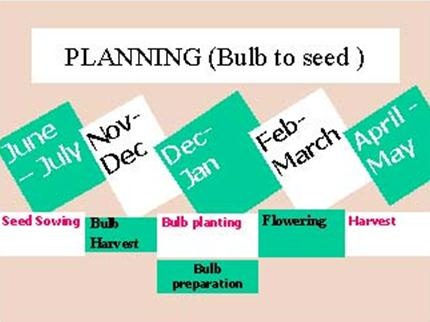
Bulb to seed method
A. Bulb Production stage
- Climatic requirement
Though it is possible to produce bulbs in different climatic conditions, mild climate is reported to be very good. For better bulb production a temperature of 15.5 to 210C and about 70% relative humidity required.
- Land requirement
Fields in which onion was grown should be selected unless it was of the same variety and was certified. The onion can be grown on various types but it grows best in soils which are able to retain moisture for longer time. Heavy soils do not permit proper bulb development and many times bulbs are misshapen. 6-8 pH range are considered better for onion.
- Isolation requirement
Onion is highly cross pollinated crop with upto 93% natural crossing. It is mostly pollinated by honeybees. For pure seed production the seed fields must be isolated from field of other varieties of onion of the dame colour at least by 1000 meters for foundation seed and 500 m for certified seed. The isolation distance between colour particularly white and red colour must be much more which needs to be decided.
- 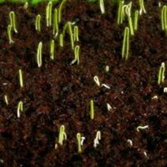Seed rate
8-10 Kg per hectare
- Sowing and transplanting time
Season Sowing Transplanting
Kharif June-July July-August
Rabi Oct-Nov Dec-Jan
In kharif 6-7 weeks old seedling and in rabi 8-9 weeks seedlings should be transplanted. Over aged nursery should not be planted otherwise premature bolting may be there.
- Manures and fertilizers
FYM 50 tonnes
CAN 400Kg
Or
Urea 200kg
Super phosphate 300 Kg
Muriate of Potash 100 Kg
Nitrogen should be applied as basal and top dressing in two splits. Top dressing may not be delayed otherwise thick necks may be a problem.
- Spacing
15 x 10 cm. More spacing between plants results in thick necked plants.
- Irrigation
Irrigation should be given at fortnightly interval or weekly interval as the case may be. Field should not be left dry for long otherwise splitting problem is more.
- Weeding
2-3 weedings and hoeings are done. Stomp @ 3.51 / ha may be applied 3 days after transplanting to manage the weeds economically. One weeding by hand is, however, necessary.
- Plant protection
Malathion @ 0.1% along with tritone against thrips. 4-5 spraying may be necessary. Indofil M45 @ 0.25% along with tritone against purple blotch and stemphylium blight, 5-6 sprayings may be done.
k) Roguing
Remove off type plants on difference in colour of leaves or plant type. Remove resprouted plants or premature bolters.
l) Harvesting
Harvesting the crops one week after 50% of tops falling and keep in windrow upto 3-5 days for field curing. After that bulbs are cured in shade to remove fields heat before keeping in store. In kharif bulbs are ready for harvesting within 90-100 days after transplanting while tops are still erect. Bulbs are allowed for field curing upto 3-5 days then again cured were in shade or in field depending upon the temperature for 12-15 days. Tops are cut leaving 2.5 cm neck.
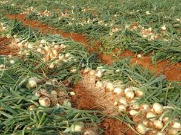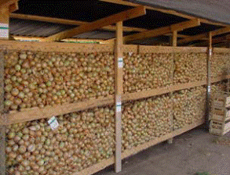
B. Seed Production Stage
- Selection of bulb
True to type bulbs are selected based on colour, size and shape kept in ventilated storage in rabi crop and in kharif crop bulbs are planted after curing for 15 days. 4-6 cm size bulbs are selected for getting good crop.
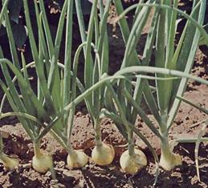
- Climate
Conditioning of plants / bulbs is necessary for seed stalks formation. Temperature of 4.50c to 140C are favourable for this conditioning. Longer this prevails, more stalks each plant will produce and more flowers will be in each umbel. Low humidity gives good seed development. While plants are in flowering clear bright sunny days are necessary for good insect activity.
- Bulb rate
25 quintal / ha
- Spacing
45 x 30 cm
- Fertilizer and manures
200 kg urea / ha.50% as basal and rest as top dressing
300 Kg super phosphate (single) / ha
100 Kg muriate of potash / ha
- Irrigation
Irrigation at an interval of 15 days in winter and 7-10 days in summer is necessary for proper seed development. Fields should not be kept saturated for long as this facilities development of diseases.
- Rouging
Remove plants based on foliage, colour inflorescence and flower characters.
- Plant protection
- Spray Indofil M45 @ 0.25% against purple blotch and stemphylium blight.
- Endosulfan @ 0.20% against thrips and head borer.
- Harvesting and curing
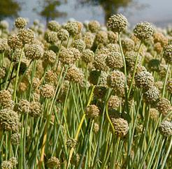
When capsules become brown and seeds inside become black the umbels are then cured and dried.
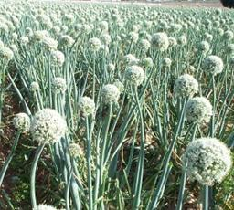
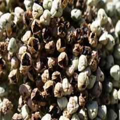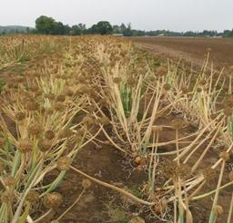
- Threshing and cleaning
Threshing is done manually. Pre-cleaning is done by brushing machine and scalper. Cleaning and grading are done by Air screen cleaner by using 1/14x1/2 as grading screen and then upgrading is done by gravity separators.
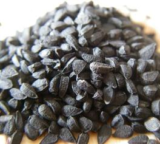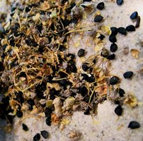
- Drying and Packing
Seeds are dried upto 6-8% moisture depending upon packaging requirements. If seeds are required to be packed in Aluminium foil and other moisture proof containers, seed are dried upto 6% otherwise upto 8%.
l) Seed yield
5-7 q / ha
Certification Standards
I. Field Standards
- General requirements
- Isolation
Onion seed fields shall be isolated from the contaminants shown in column 1 of the Table below by the distance specified in columns 2,3,4 and 5 of the said Table:
Contaminants |
Minimum distance (meters) |
|||
|
Mother bulb production stage |
Seed Production stage |
||
|
Foundation |
Certified |
Foundation |
Certified |
Fields of other varieties |
5 |
5 |
1000 |
500 |
Fields of the same variety not conforming to varietal purity requirement for certification |
5 |
5 |
1000 |
500 |
- Specific requirements
Factors |
Maximum permitted |
||
Foundation |
Certified |
||
* |
Bulbs not conforming to the varietal characteristics |
0.10% (by number) |
0.20% (by number) |
** |
Off types |
0.10% |
0.20% |
* Maximum permitted at second inspection at mother bulb production stage.
** Maximum permitted at and after flowering at seed production stage.
II. Seed Standards
Factors |
Standards for each class |
|
|
Foundation |
Certified |
Pure seed (minimum) |
98.0% |
98.0% |
Inert Matter (maximum) |
2.0% |
2.0% |
Other crop seed (maximum) |
5 / Kg |
10 / Kg |
Weed seeds (maximum) |
5 / Kg |
10 / Kg |
Germination (minimum) |
70% |
70% |
Moisture (maximum) |
8.0% |
8.0% |
For vapour-proof containers (maximum) |
6.0% |
6.0% |
Problems and Prospects of certification in onion seed production
Following are the problems and remedial measures in certification of onion seed:
- Unawareness about the notified varieties by the farmers
Many improved and notified varieties have not been demonstrated fully with the farmers as such farmers still prefer old varieties. The extension agencies in the state may therefore take up demonstration so as to allow farmers to know about the new improved varieties.
- Unawareness about the advantage of certified seed over truthful seed
In cereals and some other seeds the seed production and distribution programme are properly organized. Farmers have been demonstrated with the advantage of using certified seed. In vegetables particularly in small seed such demonstrations or extension education programmes have not been carried out. Farmers thus are not aware about the benefits of using certified seed in onion. Extension agencies should arrange state level demonstrations on use of certified seed in onion to make the farmer fully aware of advantages of the certified seed.
- No maintenance breeding for improved varieties
Since varieties when developed by the Universities / institutes do not pass through maintenance breeding later, the varieties do not behave in different characters in the same way as these were at the time of development. The application of certification standards particularly for genetics purity therefore becomes impossible. The Universities / Institutes should continue maintenance breeding of their varieties for maintaining distinctiveness, uniformity and stability.
- Most of the parameters of the varieties are influenced by agro climatic conditions
In onion there are many characters like colour, shape, bolting, neck thickness or doubles which are affected adversely by agro climatic conditions like soil, temperature, rainfall, cultural practices etc. Practical application of certification standards required to be seen at the time of certification where staff cannot have proper judgment. The staff should, therefore, know the details of characters and how and to what extent, they are influenced by adverse weather conditions. Based on that the staff should assess the situation and apply their mind in certifying a crop.
- Staff with certification agencies are neither adequate nor they have proper knowledge about the crop.
Onion is highly cross-pollinated crop and it requires through inspection or check at different stages. If one stage is left it becomes difficult to meet the requirements. For example if inspection is not managed at the time of bulb selection, Similarly if isolation is not checked at the time of bolting it becomes a frutile exercise later as roughing has no meaning at the time of flowering. This is possible only when sufficient staff having good knowledge about onion is provided.
- Unawareness of farmers about pre harvest and post harvest practices of onion seed production.
The extension agencies as also staff certification agencies are supposed to properly guide for production and post harvest practices for certified seed production initially. Certification staffs presently do not guide. Presently since staff themselves are not aware about pre harvest practices as also post harvest practices, programmes many times fail as such farmers hesitate in going for certified seed production. It is, therefore, necessary for certification staff to guide the farmers initially.
- Inadequate infrastructural facilities for storage of bulbs, cleaning, grading and drying
Bulbs of rabi onion are required to be stored in ventilated godowns which are not available. Seed requires is must which is mostly not available. Similarly for enabling the seed producers to pack the seed in moisture proof containers for long term storage, seeds are required to be dried to 6% moisture where dehumidified driers are required. Such facilities are lacking at any places.
- Certification standards are not realistic
Presently standards which have been fixed are not realistic. The standards need to be fixed based on the type of material being developed by the institutes. The effects of agro climatic conditions on different parameters need to be considered. Isolation distances are not adequate particularly between white and red varieties.
- Non availability of adequate quality breeder / foundation seed of a variety
Even if everyone is ready for taking up certified seed production, adequate quality breeder seed foundation seed with the concerned institute is not available. Because of this problem in fact many good varieties in onion have been lost before going to farmers. The seed production programme, therefore, should be properly planned right from production of breeder seed to certified seed so as to make available quality seed in adequate quantities for improving production and quality.
- Low price of seed available in the market
Many times onion seed price in the market are very low compared to quality seed / certified seed. This is mainly because farmers collect seed from premature bolters / takes up in situ method where though quality is poor quality is in abundance, Govt. should, therefore give some.
| Download this lecture as PDF here |